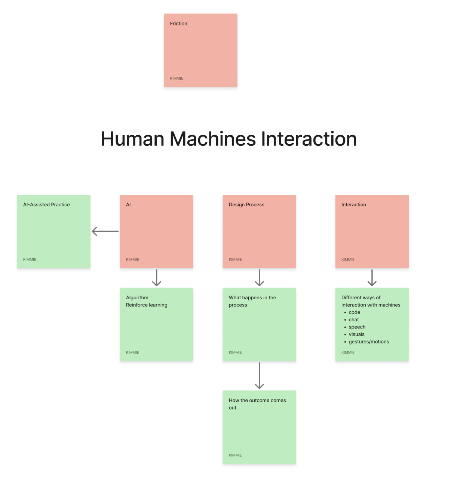
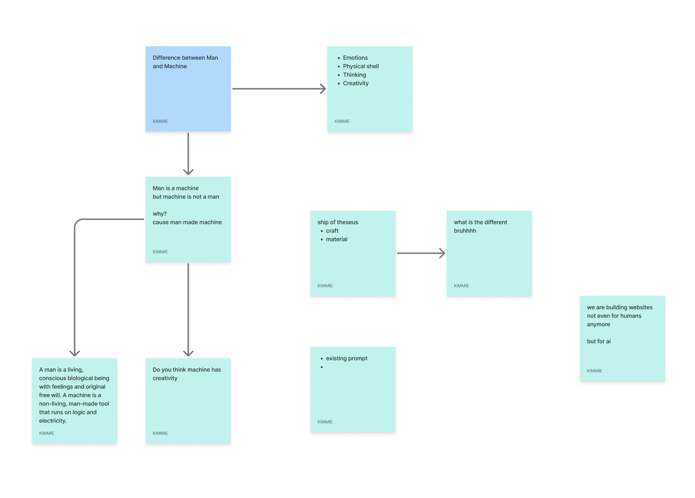

Week 4 · Semester 1
Body Language
Trigger / Reframe
Mind-mapping human-machine interaction this week brought me to an unexpected realization: what fundamentally separates collaborating with a machine from working with a human is the absence of body language.
In my mapping, "gestures and motion" emerged as a missing sensory channel alongside code, text chat, speech, and visuals.



Mind maps human-machine interaction. Click to enlarge.
Experiment
Kerning, Round 2
Kerning experiment v2 screen recording of round 2.
Approach
I built a baseline reinforcement-learning agent to kern letter pairs against a computed reward, manually overriding its adjustments across repeated rounds. I wanted to learn the mechanics of the algorithm, test what a system understands about a nuanced craft skill like typography, and observe what "working with" an AI actually feels like.
Process & Observations
In the first pass, a squished preview box distorted my perception, causing the agent to set everything far too tight. Yet, that bug produced a surprising visual result because my own visibility was compromised. In the second pass, after fixing the display bug, the agent appeared to "fight back" against my adjustments.
Ultimately, I realized there was no genuine resistance:
— The interaction lacked friction—the system simply calculated against modified inputs without understanding my intent.
— I never understood why the agent chose specific values.
— Because there was no shared dialogue, I defaulted to pushing my own judgment through rather than negotiating.
-
"Fo" kerning pair
-
"Wa" kerning pair
Comparing This to AlphaGo
The kerning agent never truly learned; it simply responded to the immediate constraints of each round. Unlike AlphaGo, which generated transformative breakthroughs like Move 37 by repeatedly playing against itself and refining its internal model over thousands of iterations, this agent remained completely static between rounds. There was no cumulative intelligence or self-correction happening under the hood—it didn't get smarter, more consistent, or more nuanced in its understanding of spatial relationships the more it was corrected.
When it "fought back" in round two, it wasn't displaying genuine resistance or novel stylistic conviction, but merely executing its fixed calculation logic against modified inputs.
Because it couldn't build an evolving, grounded perspective from iterative feedback, its outputs never moved beyond basic exploratory adjustments into the realm of truly surprising or transformational design.
Feedback Breakdown (Consultation, Thursday)
Speaking with my supervisor on Thursday finally gave me some clear boundaries to anchor the project. The overall scope is officially locked across three core pillars: Interaction Design, AI-Assisted Creativity, and Creative Practices. I'm defining my domain of Interaction Design specifically through HCI for now, which gives me a much more grounded framework to evaluate human-machine collaboration.
However, the feedback on my recent experiment design hit hard. My supervisor kept repeating that the setup was way too serious and niche—that "not everyone would appreciate or understand it." Looking back, I can see where that came from. I got so caught up in setting up a rigid testing structure that I ended up stripping away the playfulness. Going into Week 5, I need to figure out how to pivot these experiments so they feel more accessible and engaging, without losing the critical inquiry underneath.
Moving forward, if I'm genuinely investigating AI as a collaborator rather than just a utility tool, I have to learn to catch myself when I try to force the outcome. I need to give the system enough room to push back, even if sitting in that uncertainty feels deeply uncomfortable.
Moving Forward
— Follow up on The Creative Mind (pending confirmation above).
— Decide how to respond to the "too niche/serious" feedback before the next experiment.
— Carry the gesture/body-language throughline into the next round — this looks like the actual seed of where the project is heading.